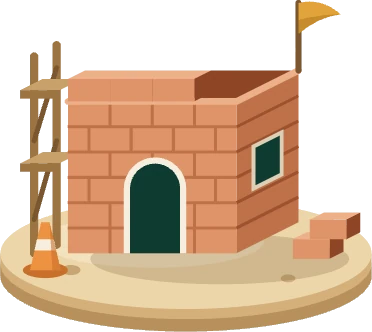
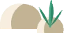

Jalon 2 · Projet d'innovation · mardi 1er décembre 2026
TEEQA
الثقة
la confiance, vérifiée
Faire construire au Maroc depuis l'étranger, et payer ce qui est prouvé.
David Lescure · Nabih El Houb · Manuela Dongmo · Evrard Dedo
M2 · IAE Savoie Mont Blanc
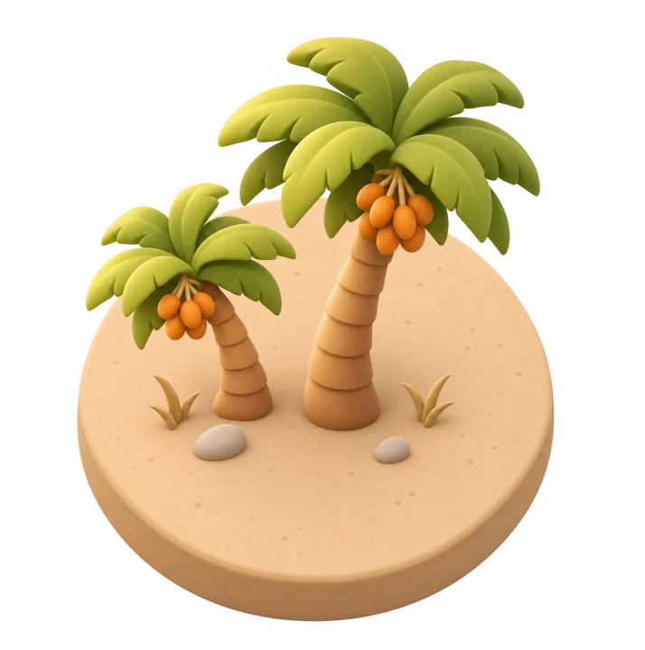
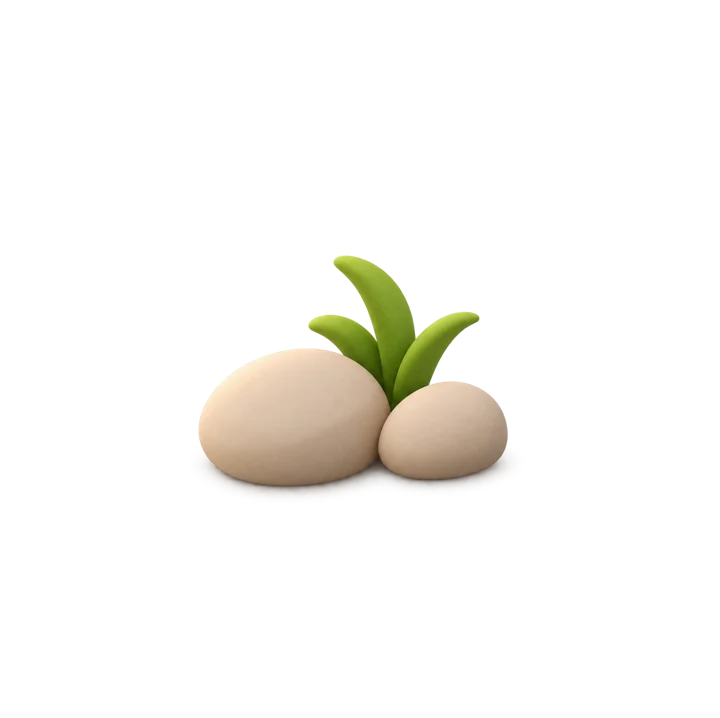
Entrer →
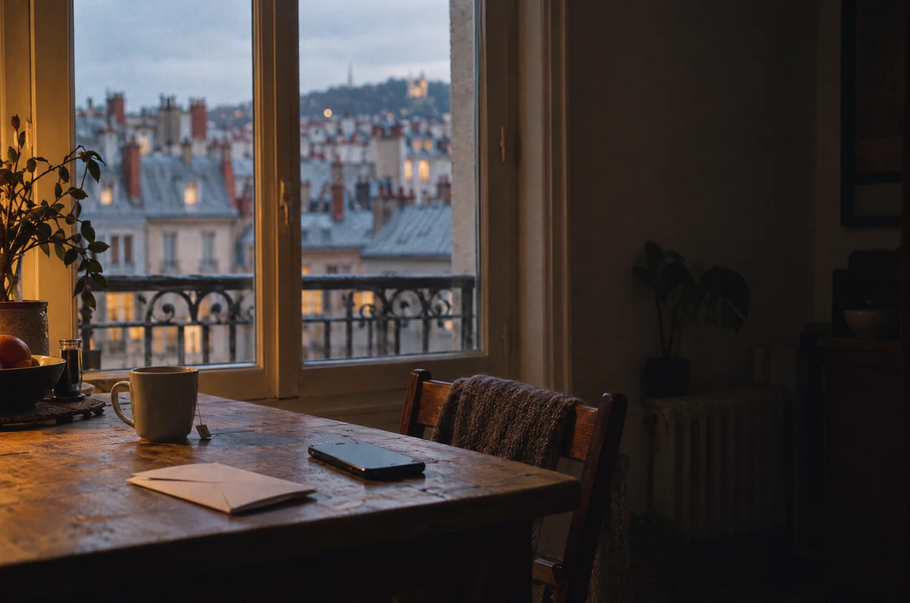
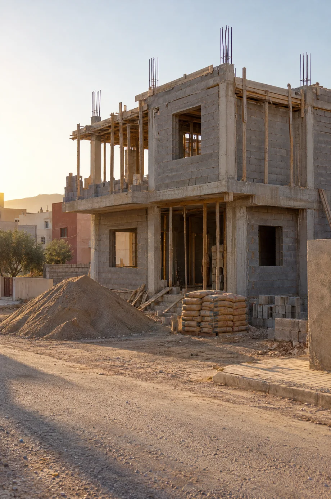
01 Proposition de valeur · le problème
Aujourd'hui, l'argent part sur un simple message.
1 350 km à vol d'oiseau
iMessage
Aujourd'hui 21:04
Il faut envoyer pour la dalle.
Tu peux m'envoyer une photo ?
C'est bon, fais-moi confiance.
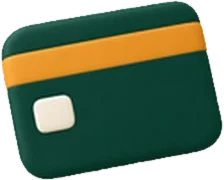
Les tranches partent sur demande, sans preuve vérifiée.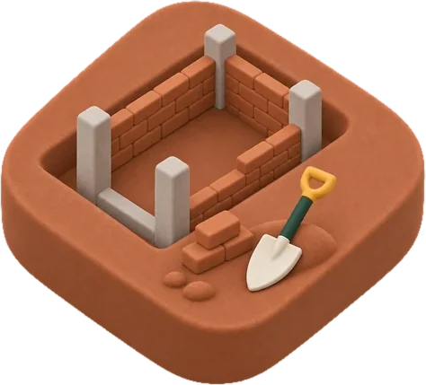
Une malfaçon se découvre tard, une fois recouverte.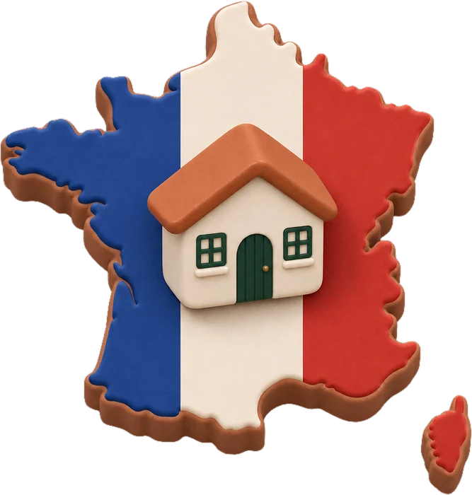
Sur place, le seul contrôle est souvent la famille : ni experte, ni neutre.
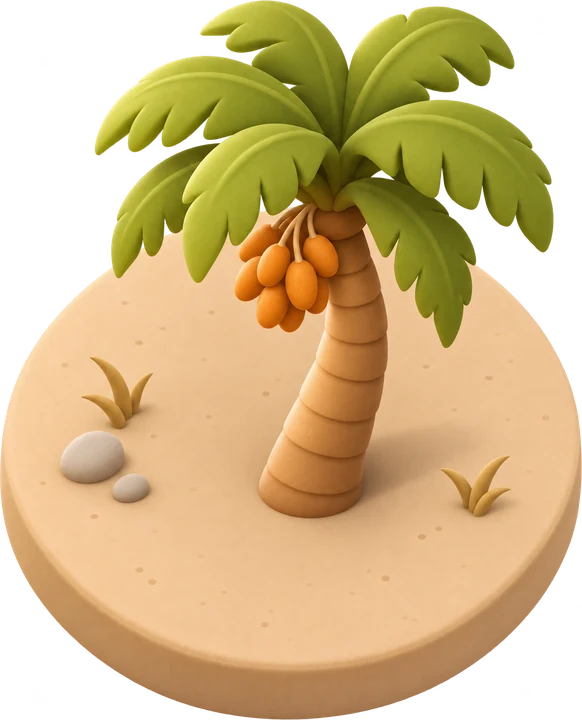
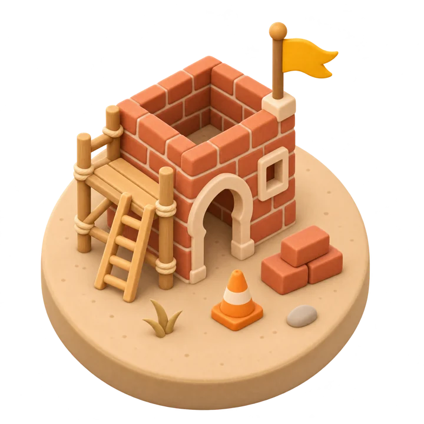
01 Proposition de valeur
L'argent suit la preuve.
À chaque étape clé, TEEQA date, signe et garde la preuve. Le client décide : payer, ou attendre.
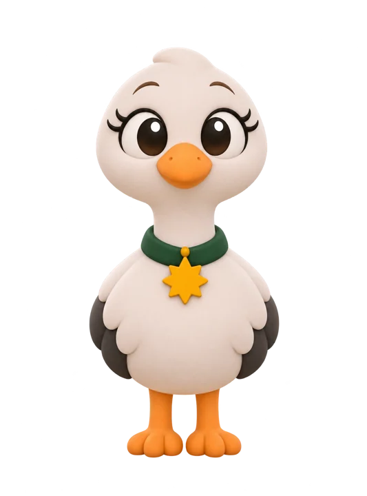
Pour qui
Les Marocains de l'étranger qui font construire, ou rénovent lourdement, sur leur terrain au Maroc.
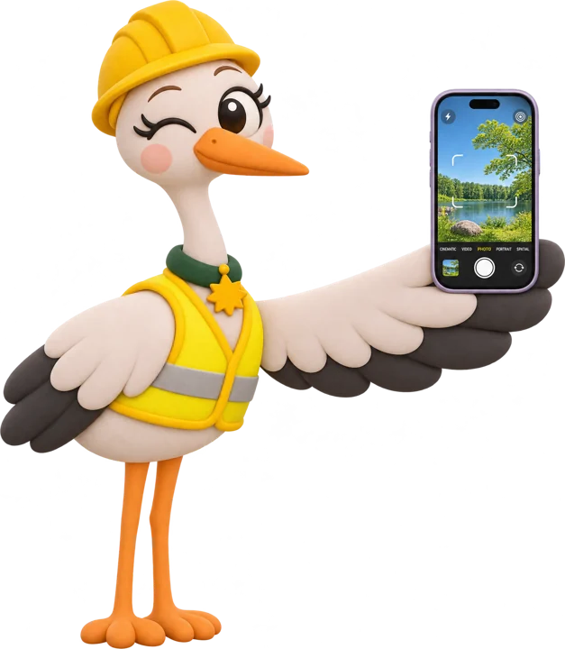
Ce qu'on vend
Une preuve datée et signée à chaque étape : photos prises dans l'appli, avis d'un contrôleur indépendant, dossier gardé 10 ans.
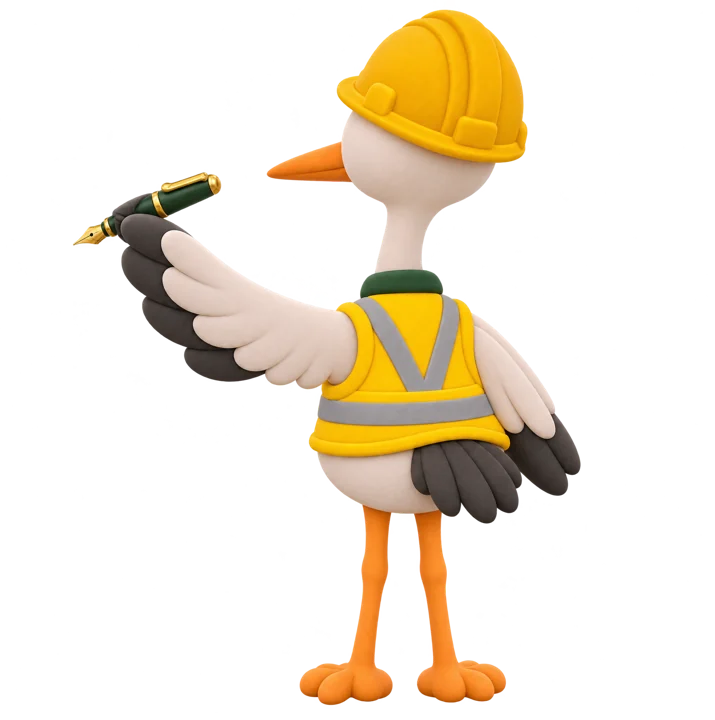
Ce qu'on ne fait pas
TEEQA ne détient jamais l'argent des travaux, ne tranche pas un désaccord, ne certifie pas une photo.
recommandéil paie l'entreprise lui-même
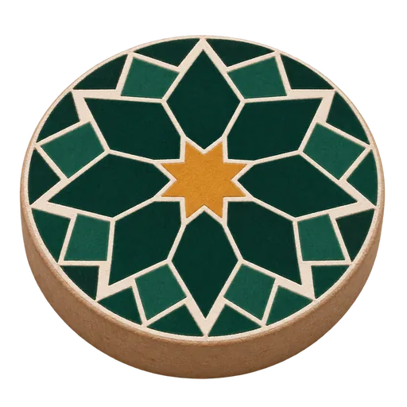
02 Marché et cibles · l'approche globale
L'argent des MRE est là, et il va d'abord à la pierre.
transférés au Maroc par les Marocains de l'étranger en 2025 (118,9 Mds DH en 2024).
Office des changes, via Hespress, 2 févr. 2026de leurs investissements vont à l'immobilier, et 16,6 % à la construction.
HCP, enquête migration 2018-2019des transferts vont chaque année à l'investissement, surtout foncier et immobilier.
Ministre de l'Économie, via FNH, 16 févr. 2021envoyés de France vers le Maroc par les ménages en 2024.
Eurostat, via Bladi, 17 déc. 2025immigrés nés au Maroc vivent en France (11,7 % des 7,97 millions).
Insee, 2025, provisoirede ciment livrées au Maroc en 2025 (+ 8,2 %) : le bâtiment accélère.
Ministère de l'Habitat (APC), via Médias24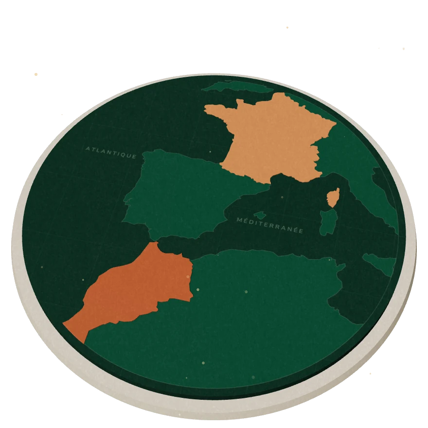
Lyon Nador · l'Oriental ≈ 1 350 km02 Marché et cibles · l'étude primaire
32 vraies réponses : le besoin se dessine, le prix reste à confirmer.
32réponses à 4 questionnaires en ligne17 oct. – 24 nov. 2026
- 25 clients particuliers
- 2 entreprises du BTP
- 3 artisans
- 2 bureaux de contrôle
- 18 sur 25 ont fait construire à distance (8) ou en ont le projet (10).
- 3 sur 9 concernés ont déjà payé une étape sans pouvoir la vérifier.
- 10 sur 18 l'utiliseraient au bon prix : 3 « certainement », 7 « probablement » ; 7 « peut-être », 1 « probablement pas ».
Prix jugé pour tout le chantier · médianes de 10 réponses, en euros
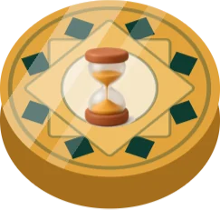
TEEQA ≈ 549 € (4 visites)Côté pros : un bureau de contrôle de l'Oriental facture 1 500 MAD une visite d'une demi-journée et préfère être payé par le service ; une entreprise de 21 à 50 salariés paie déjà plus de 200 € par mois pour trouver des clients.
Échantillon petit et non représentatif : 6 répondants seulement ont un chantier au Maroc, passé ou en projet. Aucun entretien à ce jour. À faire : entretiens, devis de 3 bureaux de contrôle.
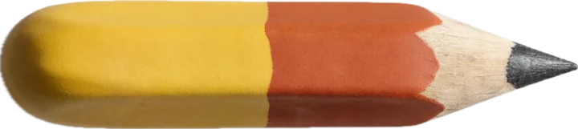
03 Concurrence · le benchmark
Le contrôle existe déjà. L'appli partagée, pas encore.
| Acteur | Contrôle par un tiers | Suivi étape par étape | Appli partagée client, entreprise, contrôleur | Prix affiché | Zone |
|---|---|---|---|---|---|
| Famille, prochepar WhatsApp | rarement du métier | au gré des visites | non | gratuit | partout |
| Inspectimmoinspection ponctuelle | oui | une visite | non | 1 200 – 3 600 DH | Casablanca |
| Reaconsultmaîtrise d'ouvrage déléguée | oui, il pilote | oui | non | 4 à 8 % des travaux | Casablanca |
| AMG Buildingconstructeur | se suit lui-même | oui | ses clients seuls | non communiqué | Marrakech |
| Soustraitant.male plus proche | ses ingénieurs | 8 visites | rapports par message | sur devis | Casablanca, Rabat |
| TACHRONE.maannuaire du BTP | non | non | annuaire | payé par les pros | Maroc |
| TEEQA | agence payée par TEEQA | étapes clés | oui, les trois rôles | 1 500 / 5 900 DH | l'Oriental d'abord |
Sources : pages publiques des acteurs (soustraitant.ma, inspectimmo.ma, reaconsult.ma) et presse (Morocco World News, Challenge, Le360), consultées le 14 nov. 2026.
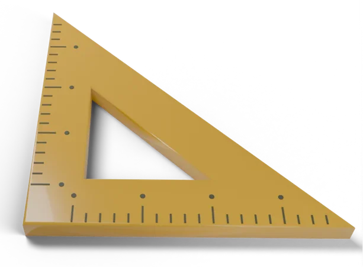
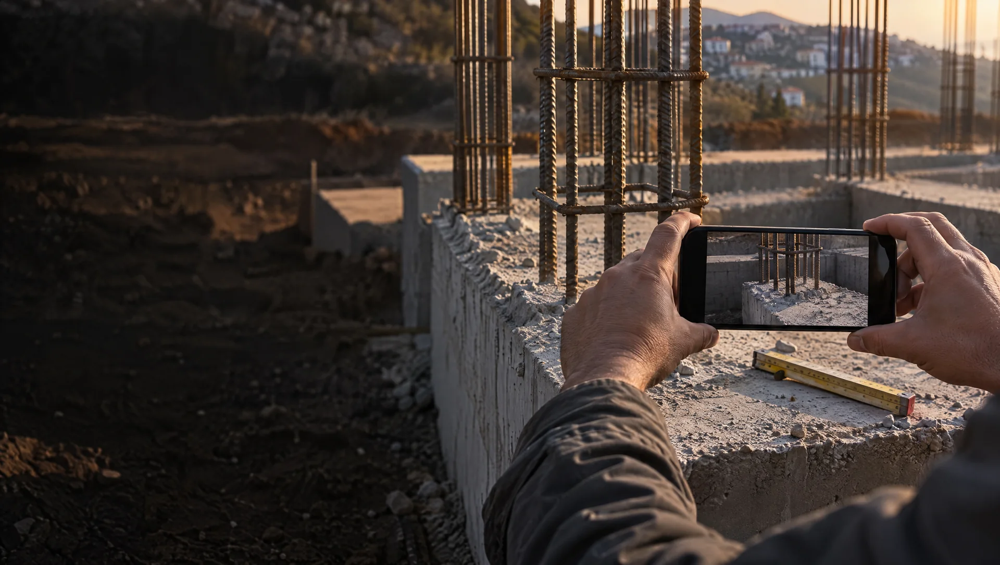
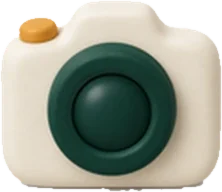
03 Concurrence · nos marqueurs de différence
Soustraitant.ma : concurrent aujourd'hui, partenaire possible demain.
- 1Une appli partagée par les trois rôlesL'entreprise déclare l'étape en un geste ; le client la voit à distance.
- 2Un contrôleur attribué par TEEQAAnonyme pour l'entreprise, qui ne le choisit pas.
- 3Des avis signés et datésPhotos prises dans l'appli ; dossier exportable 10 ans.
- 4Un prix affiché, en paliersLe même prix partout, sans devis.
Notre décision
2027 – 2028Concurrent direct. Nous démarrons dans l'Oriental ; eux sont à Casablanca et Rabat.
2029En arrivant à Casablanca et Rabat, leur proposer d'être fournisseur de contrôleurs. S'ils signent, ils entrent dans nos partenaires clés.
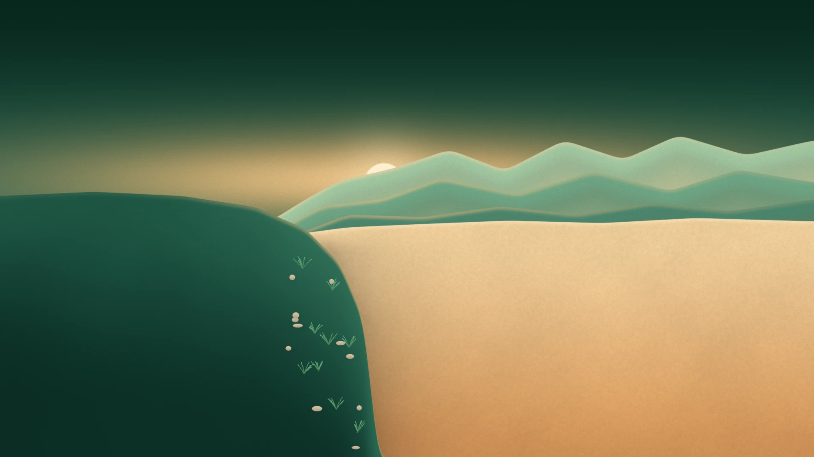
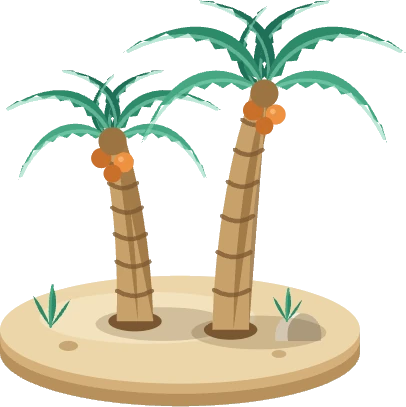
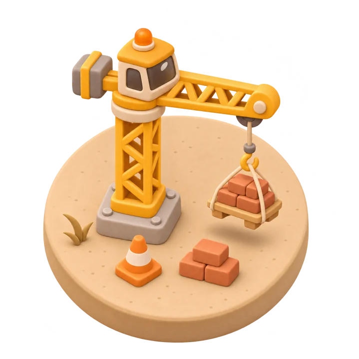
04 Concept et business model · le concept
À chaque étape, la preuve d'abord. L'argent ensuite.
Le terrain est piqueté : rien n’est encore payé.
- Fondationsà veniren contrôleréserve · paiement différévalidé · paiement recommandé
- Gros œuvreà veniren contrôleréserve · paiement différévalidé · paiement recommandé
- Second œuvreà veniren contrôleréserve · paiement différévalidé · paiement recommandé
- Finitionsà veniren contrôleréserve · paiement différévalidé · paiement recommandé
- Réceptionà veniren contrôleréserve · paiement différévalidé · paiement recommandé
- DH
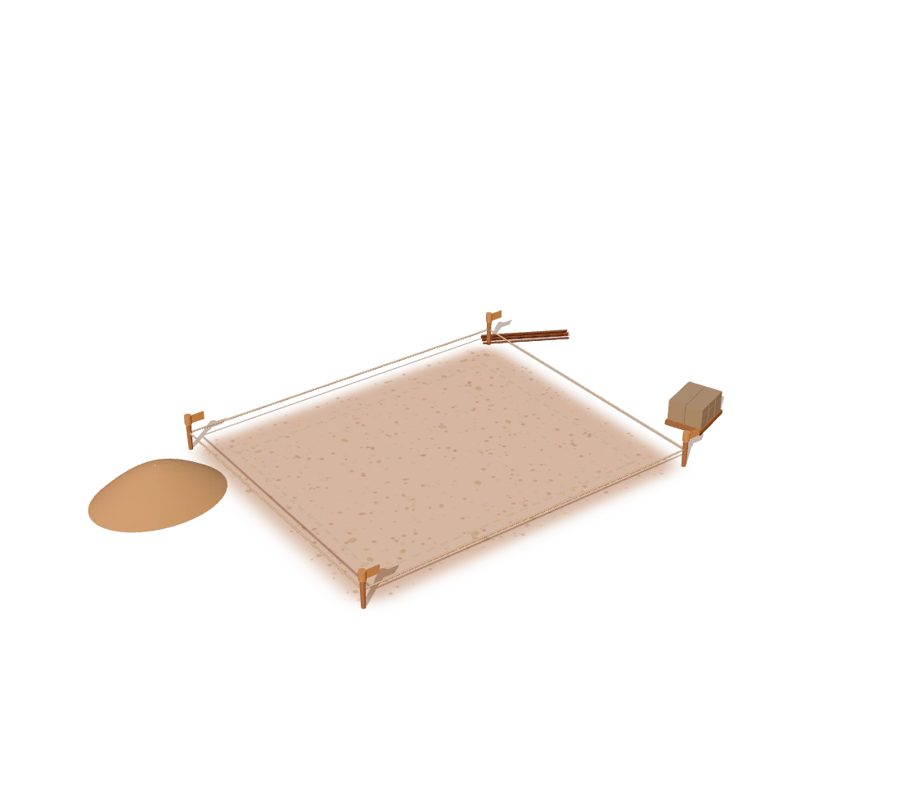
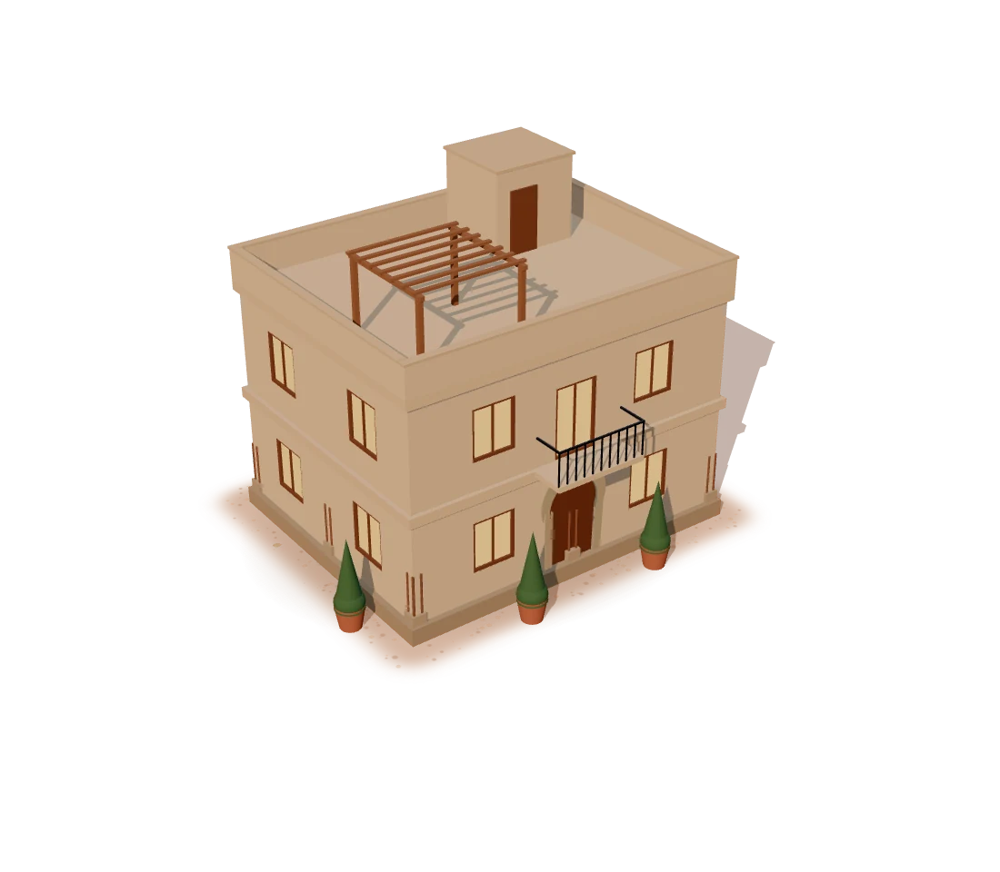
Preuve de l'étapeTerrain piqueté
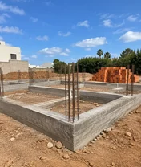
Photo datéeà venir
Avis du contrôleurà venir
Paiementrien n’est payé
Maquette illustrative · le chantier de Karim, à Nador
04 Concept et business model · les flux
TEEQA vend la preuve. L'argent des travaux ne passe jamais par lui.
- argent
- preuve
- déclaration
- en pointillé : facultatif
04 Concept et business model · le modèle de revenus
Un seul prix par chantier, en paliers. Personne ne paie deux fois.
Suivi
1 500 DH
≈ 140 € · par chantier
Sans visite : étapes déclarées, photos datées, dossier gardé.
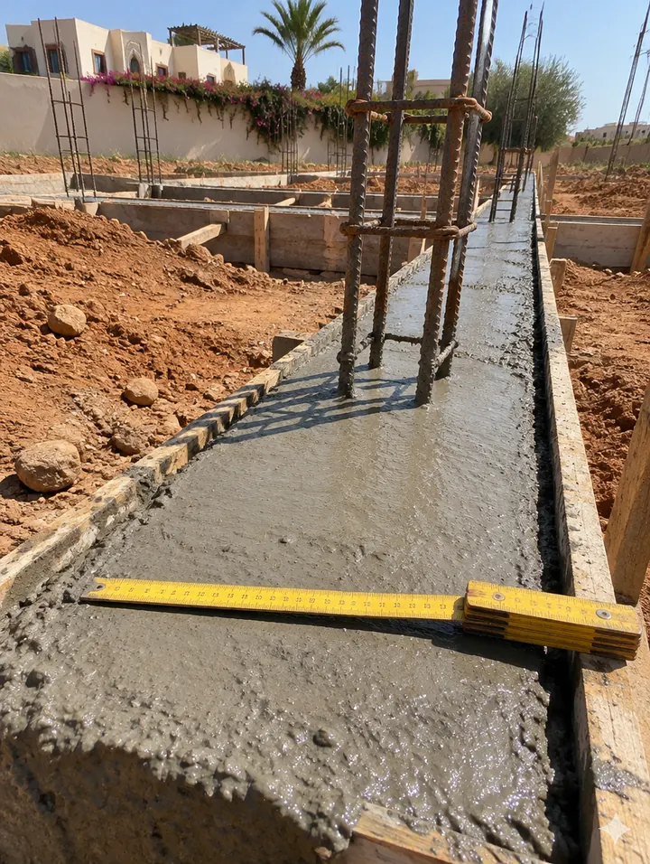
12 mars · 09:41Fondations · déclaréeLE PALIER DE RÉFÉRENCE
Suivi contrôlé
5 900 DH
≈ 549 € · 4 visites clés
Un contrôleur indépendant passe aux 4 étapes qui seront cachées ensuite.
Chaque visite en plus
+ 1 100 DH
≈ 102 € · le même prix partout
Exemple, 6 visites : 5 900 + 2 × 1 100 = 8 100 DH.
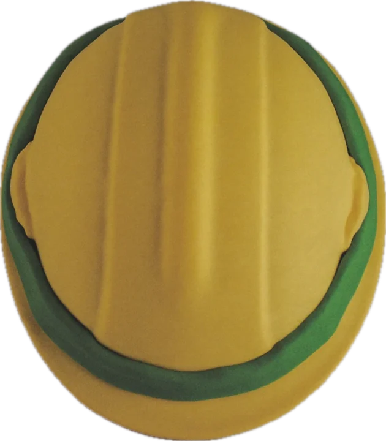
+1Une règle : forfait = 1 500 DH + 1 100 DH par visite, en une ou 3 fois. Prix du pilote ; ensuite, 3 000 + 2 000 DH.
- L'entreprise ne paie rien pour être invitée ni référencée ; seulement une contre-visite causée, ou, à son choix, de la visibilité.
- L'agence ne nous paie rien : c'est nous qui la payons, à l'acte.
- Le séquestre est facultatif : ses frais sont ceux de la banque, qui nous verse un fixe par compte.
04 Concept et business model · la rentabilité
Chaque visite paie sa visite.
Le prix cible paie aussi l'équipe.
Pilote 2027 : une visite à 1 100 DH TTC barre = 1 visite
Sur un chantier à 5 900 DH, 4 visites : 610 DH restent après tous les coûts de l'annexe de l'appli. Trop peu pour payer une équipe.
Dès 2028 : un chantier à 11 000 DH TTC, 4 visites barre = 1 chantier
3 000 DH de suivi + 2 000 DH par visite, ≈ 1 024 € : au seuil « trop bon marché » de notre étude (1 000 €), la moitié de la « bonne affaire » (2 000 €).
Visite à 1 500 DH, le tarif réelAu pilote, − 706 DH par visite ; au prix cible, + 35 DH.
D'autres payeurs, jamais le clientBanque, entreprises, assurance : 71 000 DH en 2029.
Estimations, pas encore mesurées : 700 DH payés à l'agence pour une visite courte, sur les points clés, à confirmer par 3 devis. Détail : annexe chiffrée.
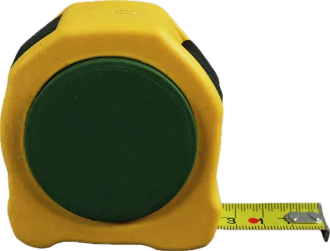
04 Concept et business model · le rôle de l'agence
La valeur, c'est la preuve datée et signée. L'agence est un fournisseur.
« Est-ce que ça n'en fait pas un de trop ? »
Votre question du 3 novembre, sur l'agence de contrôle
- Payée par TEEQA, à l'acte, jamais par l'entreprise qu'elle contrôle.
- Attribuée par TEEQA et anonyme pour l'entreprise, qui ne la choisit pas.
- Sans lien avec le client ni l'entreprise : un conflit d'intérêts se déclare, et la mission se refuse.
- Photos prises dans l'appli, avec l'heure et le lieu ; avis signé, gardé au dossier.
- Un désaccord ? Second avis par une autre agence de la zone, jamais celle du premier avis.
TEEQA ne juge pas : il date et il garde. L'agence est remplaçable ; la preuve et son historique restent.
05 Trajectoire stratégique · 3 ans
Prouver dans l'Oriental, puis suivre la diaspora.
Déc. 2026 – mars 2027
Préparer
- 3 devis de bureaux de contrôle
- 6 entretiens de MRE qui construisent au Maroc
- Un accord de banque pour le séquestre
- L'appli en ligne
2027
Pilote Nador – Driouch
10 chantiers
1 agence · prix du pilote
CA ≈ 51 000 DH
résultat − 177 000 DH
2028
Tout l'Oriental
40 chantiers
2 agences · Oujda, Berkane
CA ≈ 357 000 DH
résultat − 240 000 DH
2029
Les villes des MRE
100 chantiers
3 agences · Casablanca et Rabat avec un partenaire
CA ≈ 922 000 DH
résultat − 212 000 DH
Point mort : 144 chantiers par an · besoin de financement ≈ 630 000 DH.
Volumes : hypothèses de l'équipe, à remplacer par les ventes du pilote. CA hors taxes, toutes sources. Détail : annexe chiffrée.
06 Maquettage et UX
Le parcours principal, de l'accès à la garantie.
- P0Accès
- P1Préparation du chantier
- P2Réalisation d'une étape
- P3Contrôle sur place
- P4Avis, corrections, paiement
- P5Situations difficiles
- P6Fin de chantier et garantie
26 itérations testées avec des panels de profils types (MRE par pays, entreprises, contrôleurs) et des tests de parcours au doigt.
- 152 → 0défauts d'accessibilité
- 0/6 → 6/6buts atteints au doigt
- 28 → 17gestes en moyenne par but
- P0 – P6tous les parcours rejoués au clic
Client

Contrôleur

Entreprise
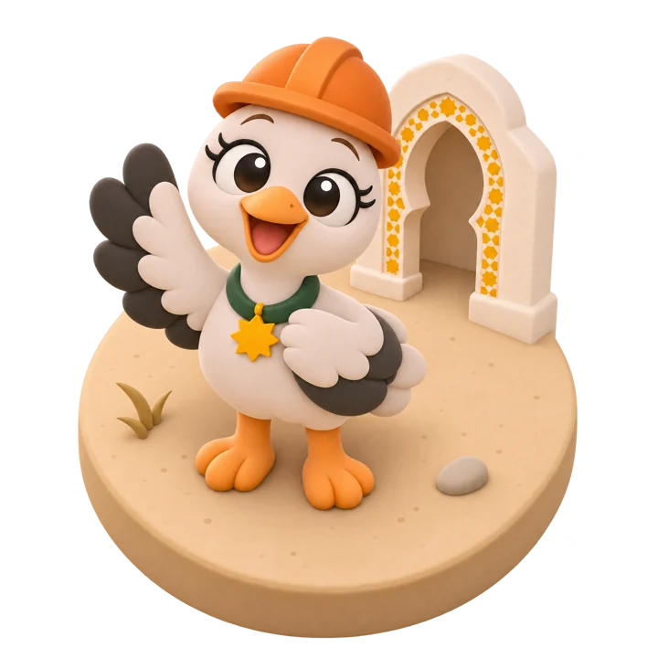
L'argent suit la preuve.
- Un besoin chez ceux qui construisent à distance, mesuré sur 32 vraies réponses.
- Un prix par chantier, en paliers ; l'argent des travaux ne passe jamais par nous.
- Une agence fournisseur ; la valeur, c'est la preuve et son historique.
Ce qu'il nous reste à prouver
3 devis de bureaux de contrôle
Des entretiens avec des MRE qui construisent au Maroc
10 chantiers payants
- 32vraies réponses à l'étude
- 5 900 DHpar chantier, 4 visites
- 0 DHdes travaux ne passe par TEEQA
- 144chantiers par an : le point mort
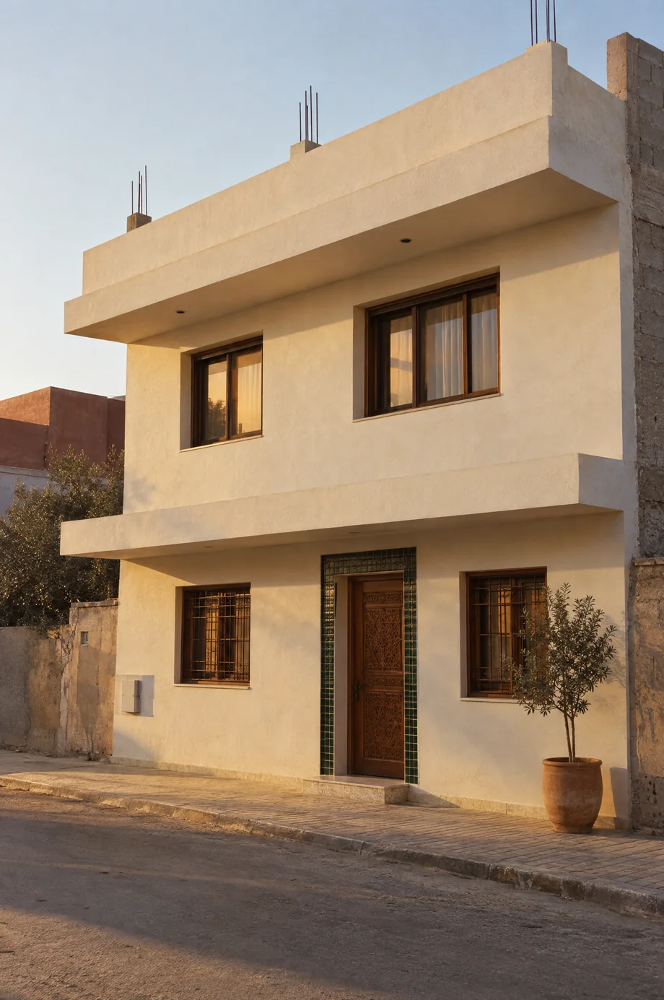
Merci.
Vos questions.
Annexe Sources
Sources
Marché
- Transferts des MRE 2025 et 2024 : Office des changes, indicateurs des échanges extérieurs, rapportés par Hespress, 2 févr. 2026 (fr.hespress.com/460750).
- ≈ 10 % des transferts à l'investissement : M. Benchaâboun, ministre de l'Économie et des Finances, rapporté par FNH, 16 févr. 2021.
- 40,7 % immobilier, 16,6 % construction : HCP, Enquête nationale sur la migration internationale 2018-2019 (hcp.ma/file/235620).
- 3,4 Md€ envoyés de France en 2024 : Eurostat, rapporté par Bladi, 17 déc. 2025.
- Immigrés nés au Maroc en France : Insee, « Immigrés et descendants d'immigrés », 2025, provisoire (insee.fr/fr/statistiques/3633212).
- Ciment 2025 : ministère de l'Habitat, données de l'APC, rapportées par Médias24, 5 janv. 2026.
Étude, concurrence, modèle
- Étude primaire : questionnaires TEEQA en ligne, 32 réponses du 17 oct. au 24 nov. 2026 (25 clients, 2 entreprises du BTP, 3 artisans, 2 bureaux de contrôle). Prix : méthode Van Westendorp, 10 réponses en euros.
- Benchmark : soustraitant.ma, inspectimmo.ma, reaconsult.ma, Morocco World News et Challenge (AMG Building), Le360 (TACHRONE.ma), consultés le 14 nov. 2026.
- Prix et décomposition : annexe tarifaire de l'appli TEEQA (« Le modèle de TEEQA en chiffres »). Euros indicatifs : 1 € pour 10,74 DH, Bank Al-Maghrib, 27 oct. 2026.
- Tests d'usage : 26 itérations, audit d'accessibilité automatique, tests de parcours au doigt, parcours P0 à P6 rejoués au clic (26 nov. 2026).